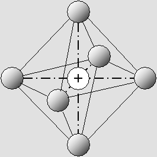
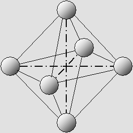
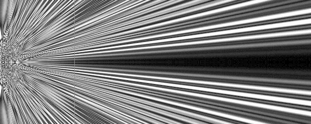
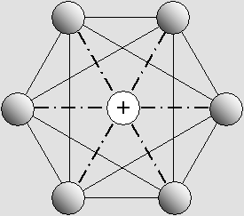
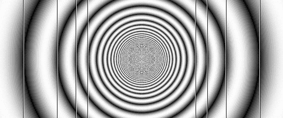

| 00 | 01 | 02 | 03 | 04 | 05 | 06 | 07 | 08 | 09 | 10 | 11| 12 | 13 | 14 | 15 | 16 | 17 | 18 | 19 | 20 | 21 | 22 | 23 | 24 | 25 | 26 | 27 | 28 | 29 | 30 | 31 | 32 | 33 | 34 |
PROTONS

The proton and the neutron are made of only six electrons.
The proton contains an additional positron in its center.
The lines represent the 15 gluonic fields.
|
The proton discovery. I finally discovered the proton and neutron wave structure on July 14, 2004. They are basically made of three quarks as three electron pairs, which are placed crosswise on the three Cartesian axes. Elsewhere, all electrons are equally distant at the vertices of a regular octahedron. One could also imagine a cube, and in this case the six electrons would be placed in the middle of the six faces. The proton is a neutron containing an additional positron. |

Each electron is attracted by 10 different gluonic fields.
Those fields cancel the negative charge and hold the whole structure together.
|
So the proton finally contains only six electrons plus one positron, which act like emitting antennas connected in phase, in quadrature, or in phase opposition. In addition, their waves meet between all of them, producing three quark gluonic fields along the three main axes, and 12 secondary non-quark gluonic fields. Their standing-wave structure is strongly amplified, and finally the gluonic field mass is much greater then that of the electrons, making the whole structure 1836 times greater then that of one electron. The diagrams for six emitting devices on an octahedral structure appears to be quite different and much more complex than that of the laser. The black funnels. The diagrams especially show eight stunning "black funnels" which should be equally spaced with their origin on the eight vertices of a cube. They explain the constant 8-electron external atomic shell. I still did not investigate the correct distances because, while displaying millions of wavelengths, my method leads to a lot of display artifacts which I will have to overcome. The solution should be some kind of randomly distributed samples or a very slow over-sampling method. So the diagram below is partially wrong. However, the true one should show some similar patterns. As far as I know, the eight conic "black funnels" should look like this: |
|
 |
The conic "black funnels", as a result of interferences between the waves from six electrons.

The six-electrons structure looks like this with respect to 8 different axes around the proton.
Those axes coincide with the center of 8 equilateral triangles which form the octahedron.
Then none of the 15 gluonic fields are aligned along them.
The system's energy cannot be radiated along those 8 axes, producing 8 radiation-free "black funnels":
The black funnels. They can capture up to 8 electrons on the external atomic layer
The same electron can join two such systems while two funnels coincide.
This explains chemical bonding.
|
The 15 gluonic fields as plane standing waves are strongly amplified by aether waves. They should radiate their energy according to the same wave patterns. However, it should be much stronger along the gluonic field axis, hence much weaker along the eight funnels axes. This means that the "black funnels" should be even darker, enabling them to capture electrons. The wave amplitude is null or almost null inside those zones, and so they should try to capture any electron wandering in the vicinity. The great number of protons inside very heavy atoms does not change this because they always align themselves on the same three axes. They only reinforce the patterns without changing them. This explains why all atoms cannot contain more then eight electrons on their external atomic shell. Because of the amplification process, the electron always seems attracted (it actually is pushed from the opposite direction) by any zone where the wave energy is weaker. Inside a heavy atom, many electrons will firstly fill the inner atomic shells, but then up to eight additional electrons will stay inside those black funnels. This will happen only if there are not enough electrons inside the inner atomic shells to balance the positive charge of the protons. This strongly indicates that all atoms have a virtual cubic structure, explaining the Mendeleev 8-periodic classification of elements. This should greatly improve researches in chemistry. While some electrons are absent from those eight funnels, electrons from another atom, preferably containing less electrons inside those funnels, will try to fill the empty ones. So, up to four electrons can be involved in the same chemical binding. The previous page on quarks shows that periodic "black cavities" (zero or low amplitude zones) exist along the 15 gluonic field axes outside the "nucleus cube". Their basic structure is hyperboloid, but the angle is so tiny that they rather look like cylinders. In addition, there are a lot of interleaved hyperboloids (hence interleaved cylinders) whose angle is increasing from one to another. They look like this: |
|
|
The periodic interleaved "black cylinders".
Electrons should oscillate inside them with linear or circular motion on periodic frequencies.
|
|
The addition of two parallel hyperboloid structures leads to true hyperbolas.
|
The diagram above shows that two parallel interleaved hyperboloid beams leads to true interleaved hyperbolas, not hyperboloids. Those low-amplitude zones should allow the protons to capture a lot of electrons on different shells in a very aggressive way. Those shells' distance also respect the same exponential structure, which explain the Balmer series. Here is the transverse view of the same structure: |
|
|
The transverse view of the periodic hyperbolic "black cavities".
So the electrons moving inside them should produce light in accordance with the Balmer series:
|
|
The hydrogen spectral lines and the Balmer series.
There is a quantum effect. But definitely no photons there.
THE ATOMIC SHELLS
|
Those periodic black cavities beautifully explain why the hydrogen electron always maintains the same set of distances from the nucleus, and why it always emits light in accordance with the Balmer series. Because of the exponential periodicity, one must postulate that unless it is bound with another atom the hydrogen electron seldom uses the "black funnels", but rather the "black cavities". Any composite emitter containing many individual units (it could be a set made of many loudspeakers or antennas), hence the proton, will produce such periodic weaker amplitude distances as a result of interferences. For instance, four vertical antennas placed on the same vertical axis and distant by 1000 wavelengths from each other will produce this stunning wave diagram: |
|
 |
The atomic shells.
Actually, this diagram was made using waves from four very distant antennas placed on a vertical axis.
|
Magnetic fields. The page on magnetic fields shows that while an electron and a positron (which is inside the proton) are close together they may produce a one-way radiation beam along the axis joining them. The waves' direction is inverted if the electron or the positron spin is switched. It is also inverted if the distance is increased or reduced according to plus or minus lambda / 4. This one-way beam is responsible for magnetic fields. The waves direction indicates the north pole and the south pole: |
|
|
The electron and the positron produce amazing one-way traveling waves along the axis.
Those waves are responsible for magnetic poles.
|
The wave mechanics does not indicate any force other than magnetic fields which could be capable of joining up to 100 positive protons inside a complex atom's nucleus. So let's assume that all those protons need strong magnetic fields in order to overcome their electrostatic charge. There is no magnetic field unless the electron and the positron are distant by a lambda multiple integer plus or minus lambda / 4. On the other hand two electrons whose spin is not the same must be distant by an additional lambda / 2 in order to match the positron pi / 2 phase shift. This indicates that a quark must contain two electrons from both spins in order to be magnetic. Only one quark of this sort is possible. Two other non-magnetic quarks are also possible. They may contain two +1/2 or two -1/2 electrons. And finally, the anti-quarks contain the equivalent positrons instead of electrons. This one-way magnetic radiation explains why scientists have "seen" up and down quarks while the three electron pairs are fundamentally similar. There are three main axes and only 1 or 2 out of 3 can exhibit the same pole simultaneously. There is no positron inside the neutron, but it still contains 15 gluonic fields whose phase is that of the positron. So the result should be the same when just one quark contains two electrons from the same spin instead of opposite: a one-way radiation beam. On the other hand, there is a true positron inside the proton. This should produce more magnetic fields and cause the spin of one or two electrons to be different from those inside the neutron. It should be emphasized that the wavelength of X-Rays and even gamma rays is still much greater than a quark. The best way to "observe" the proton and its quarks should be to use electrons as projectiles. They are indeed smaller then protons and quarks. But one should be very careful in drawing conclusions. For example, it is quite obvious that a small beam of projectiles is likely to be separated into three beams while hitting a cube. It would be very inane to deduct from this that a cube contains three components. It simply cannot show more than three faces at a time. The point is: the atom is more or less cubical, because of the proton/neutron structure. So one should expect that three components will seem to be detected. Finally, most of our knowledge about protons and quarks appear quite uncertain. The three quarks as independent entities should almost be forgotten. There are six electrons instead, albeit there are indeed three units placed crosswise on the three Cartesian axes. Following Mrs. Thompson's path. Starting from the principle that nature hates small complicated things, but loves complex big ones, I tried to find how only three electrons should behave. They would certainly be more stable than just two electrons because the gluonic fields can act on them as an attractive force. Unfortunately there is only one gluon attracting each electron. This particle does not contain a positron in its center because it could escape. It could be a muon because it is polarized (just one plane radiating on both sides). The antiparticle (three positrons) is also possible, albeit the normal muon is known to be negative. Then I examined the 4-electron model. The tetrahedron is indeed a very interesting hypothesis, as Mrs. Caroline H. Thompson had previously noted. See page 9: "What is solid matter?". She wrote: "Such a group might form an atomic nucleus". Obviously, she was on the right track for a lot of reasons, and mainly because she also discovered that the electron is a "pulsating wave center" which should act and react with another in accordance with the wave phase. As far as I know, this was the first convincing attempt to find the "Wave Structure of Matter". I admit that I read this a long time ago and that I constantly kept it in mind. I also knew that the correct structure had to be some kind of regular polyhedron. However, the 4-electron tetrahedron could not explain the periodic atomic shells, and the 8 peripheral electrons could not be explained either. So I finally switched to the 6-electron octahedron model, mainly because the observed 3 quarks seemed to be present as three electron pairs. The electron wavelength. The proton produces many wave beams containing periodic low intensity zones, where the energy is very weak. Those zones can capture a lot of electrons on many atomic shells, whose distance is constant. Because the proton's D diameter and the external atomic shell distance L are already well known, this should enable us to calculate the electron l wavelength. Unfortunately, this cannot be done with accuracy. One can make a great number of wave diagrams using 6 to 100 electrons as a proton and find that the farthest distance L where those low intensity zones can appear is equal to: L = D 2 / 4 l. This is also the case for the laser beam and there is a link to Fresnel's number, which is equal to 1 here. So the minimum electron wavelength should be given by: Atom diameter: L = 10 -8 Proton diameter: D = 10 -15 Formula: l = D 2 / 4 L Electron wavelength, minimum: l = 2.5 * 10 -23 The electron wavelength simply cannot be smaller. This is very small, but in comparison the so-called Planck's scale (10 -32) was certainly misleading. It was much too small. However, with the above 6-electron proton model, the low amplitudes zones can appear for about 100 times smaller distances. So the electron wavelength could be up to 100 times larger: (10 -21). This also indicates that the distance between two electrons inside a quark (or the proton diameter, or the quark length) should then be worth: 10 -15 / 10 -23 = about 1,000,000 to 100,000,000 electron wavelengths. On the other hand, there is also a maximum wavelength possible. The atomic "black funnels" can still work for relatively wide angles, and this indicates that the distance between electrons inside a quark could be as short as ten electron wavelengths. According to the proton's diameter indicated above, this suggests that the electron wavelength could be surprisingly longer: Electron wavelength (maximum possible): l = 1 x 10 -16 meter. The proton contains a positron. My wave mechanics shows that all the electrons in the same vicinity should synchronize themselves. Free positrons should then simply transform to electrons after a small delay because they are surrounded by negative phased standing waves. However, the neutron's center is filled with three crosswise very intense gluonic fields as standing waves, whose phase is 1/4 lambda shifted. Because the positron is also 1/4 lambda shifted, it will fit perfectly in the middle of a proton making it positive and magnetic without creating any additional gluonic field. Moreover, the neutron contains six negative electrons and it still is neutral. This indicates that something inside it should radiate the lambda/4 opposite phase, and it clearly appears to be the gluonic fields. The positron will also create magnetic fields, enabling several protons to overcome their electrostatic force and bind together inside heavier elements up to radioactive ones such as plutonium. There is a limit because magnetic fields decrease roughly according to the cube of the distance. This can be done with the help of intermediate neutrons as buffers, but I still cannot explain how. And because there are two spins for positrons, there are also two spins for protons, whose phase related to 2 pi is 0 and 1 as compared to +1/2 and -1/2 for the electrons. This explains the presence of the positron in the middle of the proton as a possible, but not compulsory, alternative. The proton is then even more stable (and probably a bit smaller) then the neutron because the positron maintains an additional attractive force on all six electrons: |
The proton contains a positron in its center.
| 00 | 01 | 02 | 03 | 04 | 05 | 06 | 07 | 08 | 09 | 10 | 11| 12 | 13 | 14 | 15 | 16 | 17 | 18 | 19 | 20 | 21 | 22 | 23 | 24 | 25 | 26 | 27 | 28 | 29 | 30 | 31 | 32 | 33 | 34 |
|
Bois-des-Filion in Québec. Email Please read this notice. On the Internet since September 2002. Last update December 3, 2009. |